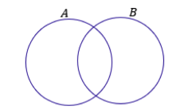

Estudo Matemática
iniciaremos o estudo com matematica
Definição de conjuento
Iniciaresmo com a teoria dos conjuntos, a ecolha desse conteudo foi cuidadosamento pensada, para ter uma base solida para servir de alicerce na matematica necessária para fazer uma excelente prova.
A teoria do conjunto é explicada abaixo: Para representar vamos a seguinte configuração abaixo:
O conjunto A é formado pelas 5 primeiras letras no nosso alfabelo. O conjunto B é formado pelo 5 números pares.
O conjunto C é formado por 10 números ímpares.Os conjutos não precisam ser somente de numeros e letras, a resposta é não.
Podemos fazer de várias maneiras, como por exemplo abaixo:
Primeirament, note que um conjueto muitas vezes aparecerá com seus elementos listados dentro de um par de chabes. Por isso, sempre que for escrecer algum conjutos, não se esqueça de colocar seus elementos aqui dento: {}. É tambem usual as pessoas nomearem conjuntos com letras maiúsculas, mas isso não é mandatório, nem necessário em algumas situações.
Vamos aprofundar um pouco de estudo sobre os subconjuntos. Para começar tente dizer quais são os subconjuentos do conjunto A= {a, b}, pronto, observe a figura como fica.
| Conjuntos A={a,b} |
Subconjuntos não {a} {b} {a,b} |
Como o proprio nome sugere, é um conjunto que não possui elementos! É representado por meio do simbolo , mas também pode aparecer como um simples par de chabes {}. Já o conjunto unitário é todo conhunto que possui um único elemento.
Você sabia que podemos juntar todos os subconjuntos de um conjuento para formar um novo conjunto?
Observe que, para representar os subconjuntos que contém outros conjuentos, utilizamos, sem problema algum, dois pares de chaves, tenha bastante cuidade em questões que tragam esse tipo de abordagem. Já vi muitas bancas se enrolares ao vobras essa questão de matemática.
Temos que ter pertinencia nessas situações.
Sempre presta atenção ao enunciado, nessa questão está falando não está correta.
C contém e outros conceitos, para simular mais situações.
Você deve ter visto ao longo na forma de diagramas. Esse tipo de representação é extremamente útil na resolução de questões, pois possibilita uma melhor compreenção do problema.
União
Nessa parte da aula veremos várias opçoes que os conjuneots podem se submeter, mais conhecida talvez seja a união dou reunião de conjuntos. A união de conjuentos é representada pelo simbolo U, basicamente funde dois conjuneots em um só.
Devemos verificar a alternativa correta.
Vamos avançar a seguinte questoes, tenho que fazer tudo certinho senhor, eu vou conseguir com a ajuda do senhor Deus a passar nesse concurso.
representada pelo simbolo ∩.
Quando dois conjuntos tem elementos em comum, podemos representar pelo seguinte desenho.
Essa região em comum representa exatamente a sua intersecção. Os elementos que estão nessa regiam em vermelho pertencem simultaneamente aos conjuentos A e B.

Gleiton Aparecido Soares de Souza, preste bastante atenção em relação a intersecção. Vejamos várias maneiras que pode fazer para gravar essa informação. Raciocinio meu amigo, raciocinio.
Estudado
Para se indidcar que um elemento pertence a um conjuento, utiliza-se o simbolo E e não pertece com um E.
Suconjuntos
Notação: A u B
Exemplo
Juntar tudo isso como um só, não fica errado mas não é recomentdado, colocar na ordem, desde que seja correto, pode ter a prova que pode até ficar fora de ordem, vemos que alguns são exclusivos, de certo conjuto.